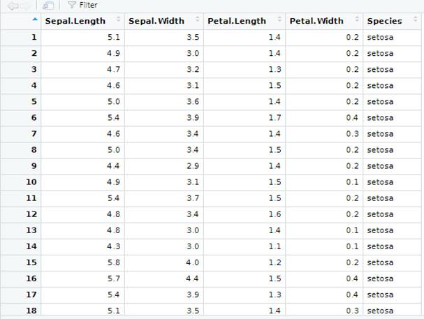
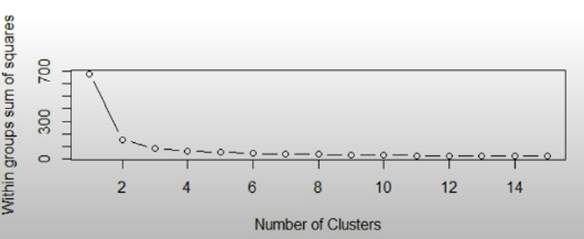
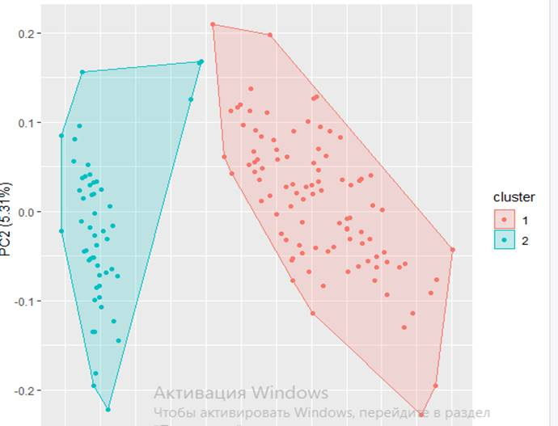
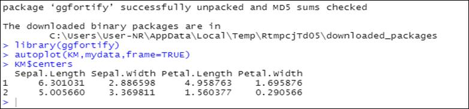

4. Үлкен деректерге K-means кластерлеу әдісін
қолдану
Мақсаты: R программалау тілінде практикалық тапсырманың көмегімен
k-means кластерлеу әдісінің мағынасын түсіну.
Кластерлеу - бұл әдіс
емес, оны шешу үшін көптеген алгоритмдер ойлап табылған
тапсырма. Кластерлеу алгоритмінің екі тобы бар:
- k-орта әдісі (k-means);
- иерархиялық кластерлеу (hierarchical clustering).
K-means әдісінің
алгоритмі 1982 жылы Lloyd мақаласында жарияланды. Алгоритмнің
негізгі құрылымы мынадай:
- алгоритмге мәліметтер және k (бұл деректер бөлінуі
керек кластерлер саны) енгізіледі;
- кездейсоқ k нүктелері (центроидтер) таңдалады және
осы нүктелерден центроидтарға дейінгі ең жақын
қашықтық есептеледі. Кейбір центроидтарға жақын
нүктелер кластерді құрайды;
- барлық нүктелерден жаңа центроидқа дейінгі
қашықтық аз болу үшін кластерге кіретін нүктелер
негізінде жаңа центроид құрылады;
- нүктелердің бір бөлігі жаңа центроидқа
жақындайды және оның кластеріне енеді, ал центроидтің
бір бөлігі кетіп, басқа кластерлерге ене бастайды;
- бұл қадамдардың барлығы центроидтардың
позициясы өзгергенше қайталанады.
Iris көмегімен K-means кластердің анализін
қарастырайық.
Iris дегеніміз иристің (гүл)
үш түрінің (Iris setosa, Iris virginica және Iris
versicolor) 50 үлгісінен тұратын төрт сипаттамасы бар
(жапырақтарының ұзындығы мен ені) мәліметтер
жиынтығы. Бұл көрсеткіштер түрлерді жіктеу үшін
сызықтық дискриминантты модель құру үшін
қолданылды.
K-means кластердің анализін
қарастырмас бұрын, қажетті пакеттерді орнату қажет.
//stats пакетте
статистикалық есептеулер мен кездейсоқ сандарды
құруға арналған функциялар бар.
install.packages("stats")
//мәліметтерді
өңдеуге арналған пакет
install.packages("dplyr")
// графикпен жұмыс істеуге
арналған пакет
install.packages("ggplot2")
// программа қажетті
барлық құрал-жабдықтар
install.packages("devtools")
//Статистикалық талдау
нәтижелері үшін деректерді визуализациялау құралдары
install.packages("ggfortify")
library(stats)
library(dplyr)
library(ggplot2)
library(devtools)
library(ggfortify)
Қажетті пакеттерді орнатып
алғаннан кейін, View(iris) командасы көмегімен iris
мәліметтерін экранға шығарамыз (Сурет 36).

Сурет 36- Iris мәліметтер
қоры
Сурет 36-дан көріп
отырғандарыңыздай, Iris мәліметтер қоры Iris
мәліметтерін қамтитын 5 бағаннан тұрады: sepal.length,
sepal.width, petal.length, petal.width, species.
Iris мәліметтер
қорындағы алғашқы 4 бағаннан жұмыс жасау
үшін, mydata объектісін құрамыз.
mydata=select(iris,c(1,2,3,4))
Кластерлердің оптималды
санын таңдау үшін WSS Plot функциясын құрамыз.
WSS дегеніміз-әр кластер
үшін нүктелер мен тиісті центроидтер арасындағы
қашықтықтардың қосындысы.
wssplot<-function(data,nc=15, seed=1234)
{
wss<-(nrow(data)-1)*sum(apply(data,2,var))
for (i in 2:nc) {
set.seed(seed)
wss[i]<-sum(kmeans(data,centers
= i)$withinss)}
plot(1:nc,wss,type="b",xlab="numbers
of clusters",
ylab="within grops sum of squares")}
Оны іске асыру үшін, R scripts блогында
қажетті объектіге байланысты жүзеге асырамыз:
Wssplot (mydata)
Нәтижесінде
кластерлердің оптималды санын аламыз (Сурет 37).

Сурет 37- Кластерлердің оптималды саны графигі
K-means кластерді анализдеу
үшін, КМ объектісін құрамыз.
KM=kmeans(mydata,2)
Кластерлік талдауды бағалау
үшін, кластерлік графикті тұрғызамыз (Сурет 38). Ол
үшін:
autoplot(KM,mydata,frame=TRUE)

Сурет 38- Кластерлік график
K-means кластерді нақты
талдау үшін, Cluster centers құрамыз.
Cluster centers - бұл
кластерге жататын барлық нүктелердің арифметикалық
ортасы.
Ол үшін біздің
құрған КМ объектісіне Cluster centers командасын
қолданыламыз (Сурет 39):
KM$centers

Сурет 39- Cluster centers мәндері
Демек, мысалы 1 класс үшін
sepal.length үшін орташа мән 6,301031-ге тең. Сурет 39-дағы
мәндерге сәйкес екі класс үшін де sepal.length, sepal.width,
petal.length, petal.width әр түрлі мәндерге ие екендігін
көре аламыз. Екі класстың да Cluster centers мәндері
бір-біріне қабаттаспайтынын көре аламыз.
Кейде, егер сізде бірнеше топ
болса, for циклі арқылы деректерді дұрыс белгілеу қиын
болады. Немесе сіз жай ғана сол кластерден деректерді білгіңіз
келеді, өйткені сіздің бастапқы деректеріңіз
белгіленбеген. Сіз оларды кластер нөмірлеріне сүйене отырып
таңдай аласыз. Менің ойымша, бұл сіздің
деректеріңізді өңдеудің әмбебап әдісі. Сіз
қарастырылған кодты қажеттілігіңізге сәйкес
өзгерте аласыз.
Тапсырмалар:
1. Әр түрлі init параметрлері бар k-орташа алгоритмнің
жұмысын зерттеңіз. Алдымен «random» параметрімен, содан кейін
қолмен таңдалған нүктелер үшін бірнеше рет
орындау керек.
2. «Шынтақ» әдісімен ең жақсы мөлшерді
анықтаңыз
3. Үлкен деректерге мысал келтіріп, k-means кластерлеуді қолдана
отырып жүргізіңіз. Кәдімгі k-орта әдісінен
айырмашылығы неде? Әр түрлі әдістер үшін
әртүрлі кластерлерге түсетін нүктелер бөлінетін
шашырау диаграммасын тұрғызыңыз.
Бақылау сұрақтары:
1. Кластерлеу дегеніміз не? Оның үлкен көлемді деректерде
қолданудың маңыздылығы қандай?
2. Кластерлеудің қандай түрлері бар және олардың
бір-бірінен қандай айырмашылығы бар?
3. k-means кластерлеу әдісінің орындалу алгоритмін сипаттаңыз.